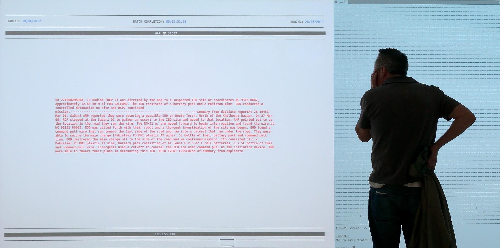

Latest artworks from Data as Culture show tech sector ‘the art of the possible’, and push the boundaries of data usage
Three new works from the ODI’s Data as Culture Programme will be shown this weekend (20 & 21 September) as part of the V&A's Digital Design Weekend, one at the V&A itself, one at The White Building in Hackney Wick and one online.
Two of the works, YoHa’s Endless War and James Bridle’s The Remembrancer explore themes of secrecy and the use of data in the context of war. Paolo Cirio’s work, the interactive online catalogue for the Data as Culture 2014 programme, actually gathers the data ‘fingerprints’ of visitors. All three are replicating and reproducing data using detailed and sophisticated techniques.
A Quiet Disposition: Remembrancer - James Bridle
The V&A in Kensington launches James Bridle's new work which was commissioned especially for Data as Culture. Part of an ongoing project exploring technology, culture and warfare, The Remembrancer is a newspaper based on Bridle's A Quiet Disposition database of companies and individuals involved in the production, financing and operation of military drones.
Conflated with data from the FTSE 350 index, The Remembrancer exposes the links between the London Stock Exchange and the War on Terror and how even unlikely corporations - and us as consumers - are implicated by association.
Visitors to the V&A Sculpture Gallery will see three stacks of limited edition newspapers, 1000 copies in each, printed especially for the show. They will be offered free of charge at the V&A during the exhibition.
Endless War - YoHa
Endless War is a large scale video installation revealing the real-time processing of military and intelligence data from the US Army Afghanistan War Diaries released by Wikileaks. Written by soldiers and officers, the data includes descriptions of military actions, meetings, and other intelligence. While some of the data was interpreted and published by newspapers, the full data set - containing endless permutations of jargon, acronyms and cross-references - remained mostly inaccessible until now.
Endless War shows how the way war is thought relates to the way it is fought - a potentially endless computational process.
A short video of Endless War can be seen here.
The White Building in Hackney Wick will host the London premiere of Endless War (shown earlier this year in Manchester as part of FutureEverything).

Online Exhibition Catalogue: your fingerprints on the artworks are the artwork itself - Paolo Cirio
This work was commissioned especially for the Data as Culture exhibition 2014. Ars Electronica award winner Paolo was invited to conceptualise and develop an online catalogue that would be informative while questioning the cyclical nature of metadata. Continually generating material, the catalogue harvests and repurposes visitors ‘browser fingerprint’ data to create new representations of the exhibited works. Unlike a traditional archive, the catalogue continues to grow and evolve with each viewing, presenting an innovative opportunity for visitors to become a part of the work itself.
Shiri Shalmy, commissioned curator,said
These three new works represent the scope and range of work included in Data as Culture. Alongside large scale installations concerning international military operations and drone warfare, it offers an intimate exploration of visitors’ relationship with their own personal data. Together with the rest of the works in the project, they invite viewers to ask questions about secrecy and openness, privacy and ownership.
Julie Freeman, Head of Data as Culture at the ODI said:
These new works take data as an art material into new territory. All three artists are questioning the collection and use of metadata. James Bridle’s database A Quiet Disposition is inspired by the ominous* Disposition Matrix*, a US military database designed to determine capture/kill targets for covert drone operations. These works highlight that we all need to consider which metadata trails should remain closed, and which we are happy to make open.
The works are part of an exciting new partnership with the V&A and the White Building (run by SPACE studios) and an expansion of the Data as Culture programme, which has been created by the Open Data Institute (ODI) to engage diverse audiences with artists and works that use data as an art material.